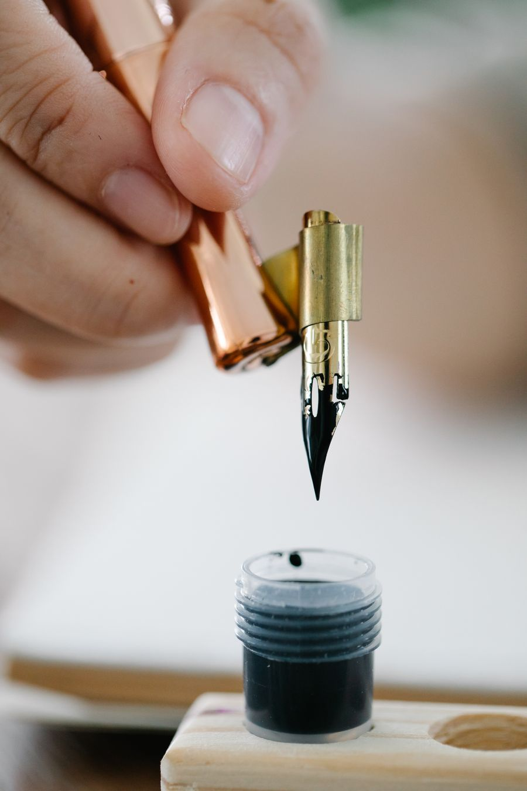

The bench
One pair of hands, in the quarter that taught the world to write cheaply.
Birmingham's Jewellery Quarter made most of the nineteenth century's steel nibs — millions of them, pennies each, shipped everywhere. The Wren Bench works at the other end of that inheritance: one pen at a time, in a workshop two streets from where the nib factories stood.
I came to pens sideways. Apprenticed at sixteen to a silversmith in the Quarter, I spent six years at a bench making things that were mostly looked at. The pen work began with restoration — seating myself, two evenings a week, with a dealer's box of broken pre-war pens and a loupe, learning how a nib is supposed to sit by putting right the ones that no longer did. The grinding followed the way it usually does: first my own pens, then friends', then, when the friends began sending strangers, a book with names in it.
The Wren Bench was set up in 2009. It has never had an employee, a production line, or a pen in a shop window. What it has is the book — 214 pens delivered, 486 nibs tuned on other makers' pens, and a queue that is printed rather than apologised for. A bench like this sells one thing: the fit between a piece of gold and a particular hand. Everything else — the turning, the polishing, the lacquer — is in service of that fit, and anything that does not serve it is decoration I decline to charge for.

“A steel nib described as gold because it is gold-coloured is a lie told at the till. The metal is the metal; the price should say which.”
That sentence is the bench's whole commercial policy, and the honesty page below is it, written out long.
-
1
The hand
Before anything is cut, the bench reads your hand: a page of your ordinary writing — unposed, written the way you write when nobody is grading it — measured for hold angle, pressure, roll and speed, and kept with your entry in the book. № 188, in the case files, is the standing lesson in why the page must be ordinary: a careful sample is a performance, and a pen tuned to a performance fits nobody.
-
2
The turning
The body is turned on the lathe from the stock named in your entry — ebonite, cast resin, old-stock celluloid turned slowly and rested between passes, or ebonite again under urushi, layer on cured layer. Dimensions follow the hand as much as the eye: length, weight and balance point are set for the sessions you actually write, and recorded in the book.
-
3
The grind
The nib units are bought in — German-pattern 14k and 18k gold nibs from an established nib works, bought as blanks and named as bought-in wherever they are described. The bench's work is the grind: stone and film under the loupe, the point shaped to the grind on Table T1 and the foot angled to your hold. A vintage nib, where one is fitted, is never reground — it is seated, fed and tuned, and credited to its maker.
-
4
The tuning
Write, adjust, write again. Every pen is written with across at least three sample sheets — hairlines, shades, the figure-eight — and adjusted between sheets: tine alignment, flow, the sweet spot centred where your hand puts the nib. A full commission gets three full rounds of this. The sheets are kept; the last one leaves with the pen, so you can hold my line against my promise.
-
5
The delivery
The pen leaves with its sample sheet, its book entry copied out — materials, grind, measurements of your hand, dates — and the adjustment policy in writing. If the fit is wrong, the policy, not an argument, decides what happens next.
Materials are named exactly
| Word used | What it is |
|---|---|
| 14k gold nib | 585 parts gold in the thousand, alloyed for spring. The standard the bench grinds. |
| 18k gold nib | 750 parts gold in the thousand. Softer, with more line variation under pressure — and less forgiveness for a heavy hand. |
| Gold-plated steel nib | A steel nib with a gold-coloured plating. Sold at this bench only under that full name, and priced below 14k, because it is steel. |
| Ebonite | Vulcanised hard rubber. Warm, light, faintly sulphurous when freshly turned; it mellows, and the book says so. |
| Celluloid | Old stock only — the bench buys no new celluloid. Beautiful, flammable in the making, turned slowly; stocks are finite and the book does not pretend otherwise. |
| Cast resin | Cast acrylic resin, named as resin. It is not ebonite, not celluloid, and never "ebonite-style". |
| Urushi | Natural lacquer over an ebonite body, built in layers over six weeks of curing. Poisonous in the making, inert on the pen. |
| Vintage nib | Another maker's work, sourced and stated: maker where the imprint allows, period, and provenance by receipt. The bench fits and feeds it; it does not sign it. |
The one-hand risk, printed
A nib tuned to a described hand — its angle, pressure, roll and speed — is tuned to that hand. Lent to another writer, it will feel wrong: scratchy where it should glide, shy where it should shade. That is what the work is — a fit between one hand and one nib, close enough that a stranger's hand notices the difference at once. It is also the risk you accept when you commission a pen fitted to you, and the bench manages it three ways. The measurements are taken from ordinary writing, so the fit is to the hand you have, not the one you present. The adjustment policy below gives you three months of free re-tuning while the fit settles. And if your hand changes — injury, habit, a new grip after years — the book holds your measurements, and a re-tune to the new hand is charged as tuning, not as a new pen.
One more limit, printed because it should be: nine commissions stand declined in the book, where the hand described could not be matched honestly — a grind asked for that the hand would have destroyed, a hairline demanded of a nib ground too wide to give it. The planner on the line page will refuse you in exactly the same way, before any money is discussed. A refusal early is a kindness; a pen that fits nobody is an ornament with a queue.
| Term | The bench's practice |
|---|---|
| Entering the book | A deposit of 40% of the reckoning enters a commission in the book and holds its place. Tuning work is never paid in advance. |
| The queue | Places are taken in order, by class, on the rhythm printed in Table Q1. The book does not sell queue-jumping; a place can be given up, and the deposit returned in full before the bench starts. |
| Balance | Due on delivery, when the pen and its sample sheet are in your hand — never before. |
| Adjustment | One re-tune free within three months of delivery, for fit. Postage is at cost, insured, both ways; the work is the bench's. |
| Returns | A pen tuned to a measured hand is not returnable as unsuitable — the adjustment policy is the remedy, and it is printed here before the deposit so the bargain is honest. Faults in making are repaired or the pen remade, at the bench's cost, without a time limit worth naming. |
| Vintage nibs | Charged at their receipted purchase cost plus the fitting fee. The receipt is shown before you commit, and a copy travels with the pen. |
| Posting a pen for tuning | Insured, tracked post both ways, at cost. The bench photographs every arriving pen before it is opened fully — condition is written down on arrival, while it can still be checked. |
To enter the book, write to the bench.